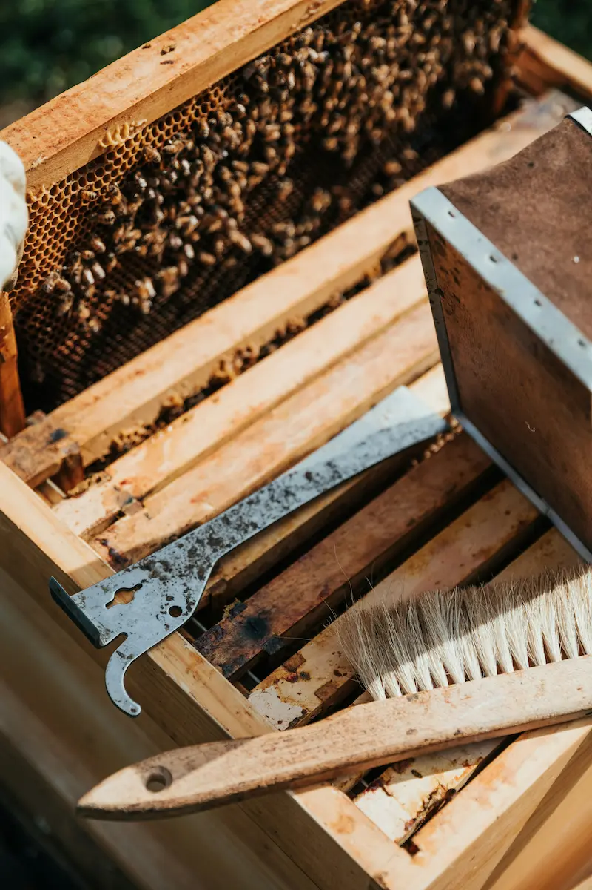

August Beekeeping UK – Varroa, Honey and Winter Preparation
Last updated: 1 May 2026
August is one of the busiest and most important months in the UK beekeeper's calendar. Colonies are usually at their largest, there may still be a strong nectar flow such as heather, balsam or other late summer forage, and at the same time you are already planning for winter. The bees you raise in late summer will form the core of your winter population, so everything you do now has a direct impact on how well your colonies survive until spring.
This page is part of the BeezKnees Year in the Apiary – monthly beekeeping calendar. It builds on the honey harvest and summer management work of July and focuses on August beekeeping tasks in the UK: varroa treatment timing, assessing stores, deciding whether to unite weak colonies, managing wasp pressure and preparing hives for autumn. For many UK beekeepers, August becomes the main treatment period for reducing late-summer mite and virus pressure before winter bees are raised. If you are weighing up treatment choices, compare chemical treatments, non-chemical varroa methods and PPE for varroa treatments before you act.
Think of August as the point where you shift from expansion to consolidation – making sure each hive is healthy, queenright and well provisioned for the colder months ahead as you move toward September.
August sits at the end of the main summer beekeeping period. For the wider seasonal picture, see the Summer Beekeeping UK guide, which links June, July and August tasks together.
This month shapes winter survival
Keep August treatment, feeding and colony decisions together
August is the month when records really matter. Varroa timing, stores, queen status and colony strength all affect how well your bees come through winter, so it helps to keep each hive’s late-summer history in one place.
August at a Glance – Late-Summer Priorities
Bee Behaviour
- Brood rearing begins to reduce in some colonies
- Winter bees start becoming the priority
- Late nectar flows may still be available in some areas
Key Jobs for the Beekeeper
- Monitor and treat varroa at the right time
- Check stores and begin feeding if needed
- Assess colony strength and unite weak hives where sensible
Risks to Watch
- Raising winter bees under high mite pressure
- Robbing and wasp attacks on weaker colonies
- Going into autumn with poor stores or weak queens
Key August Priorities at a Glance

- Monitor and treat varroa before winter bees are reared (see Varroa Management).
- Decide whether to harvest honey, and how much to leave for the bees.
- Assess winter stores – aim for around 20–25 kg for a full-sized colony.
- Unite weak or queenless colonies so you don't nurse failing hives into winter.
- Watch for signs of disease, including late-summer virus and varroa pressure, such as foulbrood, chalkbrood, sacbrood and Nosema.
- Control wasps and robbing as part of managing late-summer pest pressure by reducing entrances and using traps where needed.
- Protect stored supers and comb from wax moth and rodents.
- Keep up good apiary hygiene and continue accurate record-keeping (see Hive Hygiene).
Honey Flow and Harvesting in August
Depending on your location, your bees may still be working late flows such as heather (particularly in upland areas), Himalayan balsam along river corridors, or other late summer forage. In some areas the main flow is already over and colonies are beginning to slow down.
Before you harvest, make sure that honey intended for extraction is fully or mostly capped. Uncapped honey often has a higher moisture content and is more prone to fermenting in the jar. If you have frames of uncapped honey that are still quite thin and runny, leave them on the hive for the bees to finish.
If the flow has finished and the supers are well capped:
- Remove supers using your preferred method (bee escapes, clearing boards, gentle brushing).
- Extract honey in a clean, warm environment – see Extracting Honey for practical harvesting and handling advice.
- Once extracted, return wet supers to the hive for a few days so the bees can clean them up.
- After they are dry, remove supers and store them safely to prevent wax moth and other pests.
If you decide not to extract some of the honey, you can nadirm a super of partially filled comb beneath the brood box. This lifts the colony further off the cold ground and provides an extra reserve of food for winter.
Varroa Monitoring and Treatment
August is a crucial time to deal with varroa mites. For many colonies this is the main treatment period and the key month for late-summer mite control. The aim is to ensure that the winter bees raised later in August and September develop in a low-mite environment, giving them the best chance of surviving through to spring.
Make time to:
- Check mite levels using a monitoring board, sugar roll or alcohol wash as part of your late-summer mite checks.
- Review your annual plan in the Varroa Management guide, check seasonal timing in the Varroa Treatment Calendar and decide whether your situation calls for chemical treatments or non-chemical varroa methods.
- Choose an approved treatment that suits your hives and conditions (for example, thymol-based products where temperature allows).
Always read and follow the manufacturer's instructions, especially regarding temperature range, exposure time and whether supers must be removed. Avoid "off-label" or non-approved treatments – these can be unsafe for you, your bees and the wider environment.
If you are using licensed products, make sure you also understand the safety requirements in PPE for Varroa Treatments and keep records of treatments properly. August is not the month to guess with dosing, temperature limits or protective equipment.
Some beekeepers also use oxalic acid vapourisation (OAV) later in the year when colonies are brood-light. If you choose to do this, ensure you understand the technique well, use the correct personal protective equipment and comply with local regulations.
This is the key month for clear decisions
Track treatment dates, stores and queen status properly
In August, one missed note can affect the whole winter setup. Keep varroa checks, treatments, feeding and colony-strength decisions recorded against the right hive so you know exactly where each colony stands.
Feeding and Winter Stores
As the main nectar flow slows or ends, colony consumption may start to outstrip incoming forage – especially in areas with poor late summer flowering. In August you should check whether each hive has enough food reserves to carry it through winter.
A full-sized colony in the UK typically needs around 20–25 kg of stores. Smaller colonies or nucs may manage with less, but still need enough sealed honey or syrup to survive cold or wet spells when flying is impossible.
If a colony feels light when you heft the hive, or your notes show that frames are poorly filled, it's time to start feeding:
- Use a strong syrup (around 2:1 sugar to water) or a commercial invert feed.
- Feed in the evening to reduce the risk of robbing.
- Avoid frequent small amounts that excite the colony – instead, offer larger feeds that they can take down steadily.
- Make sure feeders are bee-tight to avoid drowning and robbing.
Fondant is usually reserved for late winter or emergency feeding, but some beekeepers use it earlier if liquid feeding is not possible. If you are unsure, your local association or mentor can advise on the most suitable approach for your area.
What you do with feeding in August shapes the colony you carry into September, when winter preparation becomes even more important and stores, queen status and treatment follow-up need checking again.
Assessing Colony Strength and Uniting Weak Hives
August inspections should focus on whether each colony is viable for winter. Ask yourself:
- Is the colony queenright and laying well?
- Is there a good covering of bees on most frames?
- Are brood patterns compact and healthy?
- Are there sufficient stores and pollen?
If you find weak colonies that are disease-free but unlikely to survive alone, it is often better to unite them with a stronger hive rather than try to nurse them through winter. The classic newspaper method works well:
- Confirm both colonies are free of foulbrood or other serious disease (see Bee Diseases and Pests).
- Retain the better queen and remove the poorer one.
- Place a sheet of newspaper over the brood box of the queenright colony.
- Make a few small slits in the paper, then place the brood box of the queenless colony on top.
- Over a few days, the bees chew through the paper and unite with minimal fighting.
- Once they are integrated, rearrange frames if needed and continue managing the now stronger colony.
You can still make splits in August, but it is risky unless you use a good mated queen and can be confident that both colonies will be strong and well provisioned before winter. For many beekeepers it is safer to unite and enter winter with fewer, stronger colonies.
Health and Disease Watch – Spotting Problems Early
August is an excellent time to review overall colony health. As brood areas begin to contract, it can actually be easier to spot problem patches or unusual patterns. Watch for:
- Irregular or "pepper pot" brood patterns that may suggest queen issues or disease.
- Dead or twisted larvae, discoloured cappings, or ropy brood (potential foulbrood).
- Grey, chalky mummies at the entrance or in cells (see chalkbrood).
- Scattered, watery or sac-like larvae hanging in cells (possible sacbrood virus).
- Adult bees with deformed wings or crawling on the ground, often associated with high varroa loads and late-summer virus pressure.
If you suspect notifiable diseases such as American or European foulbrood, do not move frames between colonies. Contact your local bee inspector through BeeBase for advice. Good hive hygiene – cleaning tools, avoiding unnecessary comb transfer and maintaining tidy apiaries – all help to reduce disease risk.
Wasps, Robbing and Defending the Hive
By August, wasp colonies are often at their peak and can cause significant trouble in the apiary. They are attracted by the smell of honey and syrup, and will quickly target weaker hives or exposed comb. This is one of the clearest examples of late-summer pest pressure.
To protect your bees:
- Reduce hive entrances to a size the colony can defend (especially for smaller colonies or nucs).
- Keep the apiary tidy – avoid leaving exposed honey, cappings or sticky supers lying around.
- Use wasp traps placed away from hive entrances, checking and emptying them regularly.
- Inspect weak colonies more frequently, as they are most at risk from wasp attacks and robbing.
Be aware that robbing behaviour can also occur between honey bee colonies. If you notice frantic flying, bees fighting at entrances or bees trying to enter through joints and cracks, take action quickly by closing down entrances, removing open feed and ensuring hives are bee-tight.
Supers, Comb and Equipment – Preventing Wax Moth Damage
Once honey supers have been removed and cleaned up by the bees, you need to store them so they remain useful for next year. The main threats are wax moth, rodents and damp, all of which become more obvious as late-summer pest pressure rises.
- Stack supers in a cool, dry, well-ventilated area.
- Where possible, alternate boxes at right angles to create a chimney effect and discourage moths.
- Use solid floors or mesh to keep mice and rats out of stored equipment.
- Inspect stored comb periodically for signs of webbing or moth larvae and act quickly if you see any damage.
Good equipment care now saves you time and money next season and helps the bees by giving them clean, usable comb to build on quickly when the spring flow starts.
Good storage, clean equipment and careful comb handling are all part of wider hive hygiene, which becomes increasingly important as the season shifts from honey production to winter preparation.
August Inspection Checklist
During each August inspection, aim to answer the following questions for every colony:
- Is the colony queenright? Do I see eggs or very young larvae?
- Is the brood pattern compact and healthy with good coverage?
- Are there any signs of disease in brood or adult bees?
- What is the current varroa level, based on late-summer mite checks, and do I have a treatment plan in place?
- Does the colony have enough stores for the time of year, and for winter overall?
- Is the colony strong enough to survive winter alone, or should it be united with another hive?
- Are entrances reduced appropriately, and is there any sign of wasp activity or robbing?
- Are supers and spare comb being stored safely to prevent wax moth and damage?
Make notes in your hive records after each inspection – your future self (and your bees) will thank you when you look back in autumn and winter.
Common Beginner Mistakes in August
- Harvesting too much honey and leaving colonies short of winter stores.
- Delaying varroa treatment beyond the main August treatment period, so winter bees are raised with high mite loads.
- Trying to overwinter very weak or queenless colonies instead of uniting them.
- Feeding small amounts of syrup frequently, which can encourage robbing and wasp attacks.
- Leaving wet supers or uncapped honey exposed in the apiary, attracting wasps and robbers.
- Ignoring early signs of brood disease or not seeking help promptly when something looks wrong.
If you are unsure, talk to your mentor or local association, or revisit the relevant pages such as Hive Management, Varroa Management and Bee Diseases and Pests.
Use your checklist as a real record
Turn August inspections into usable winter-prep notes
Checklist answers are only useful if you can find them later. Record stores, treatment status, queen quality and uniting decisions while they are fresh so September planning is much easier.
August Beekeeping FAQ – UK Beekeepers
Your main tasks are monitoring and treating varroa, checking colony strength, ensuring enough winter stores, harvesting surplus honey, uniting weak hives, watching for disease and controlling wasps and robbing.
You may not need full swarm-control inspections every seven days, but you should still check colonies regularly – typically every 7–10 days – to monitor brood patterns, stores, varroa and signs of disease or queen problems.
Treat as soon as possible after the main honey harvest so that winter bees are raised with low mite levels. For many apiaries, August is the main treatment period for late-summer mite control.
As a guide, aim for around 20–25 kg of stores for a full-sized colony in the UK, adjusted for local conditions and hive type.
It depends on the treatment. Some products are compatible with feeding, while others are not. Always follow manufacturer guidance.
A colony with low bee numbers, poor brood pattern or a failing queen may struggle. If disease-free, uniting with a stronger colony is often the better option.
Do not move frames or equipment. Contact your local bee inspector via BeeBase and follow official guidance.
From guide to practical setup
Use HiveTag alongside your August hive work
Keep this guide open for reference, then log treatments, stores, feeding and colony-strength decisions as they happen. That gives you a much clearer picture going into September and autumn.
What to Read Next from This August Guide
If you are deciding how and when to treat, the next pages to read are July Beekeeping Tasks, Varroa Monitoring Methods, Chemical Varroa Treatments, Non-Chemical Varroa Methods, PPE for Varroa Treatments, Varroa Treatment Calendar (UK), Hive Hygiene, Recording Treatments Properly and September Beekeeping Tasks.
Use this August guide together with the rest of the Year in the Apiary series to make confident late-summer decisions and carry stronger, healthier colonies into autumn. From here, continue into September, revisit July if you are reviewing harvest timing and colony condition, and use key support pages such as varroa monitoring methods, chemical varroa treatments, non-chemical varroa methods, feeding bees and hive hygiene to connect August treatment and store decisions with the season ahead.